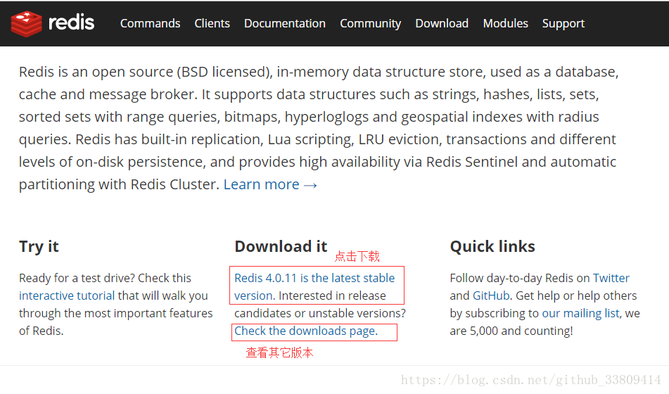
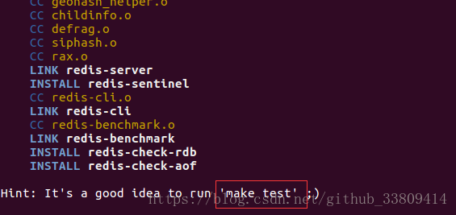
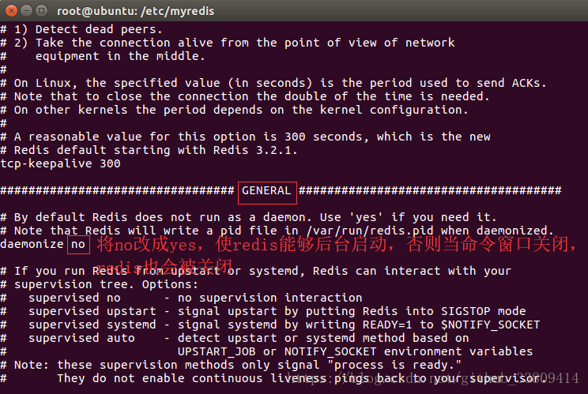
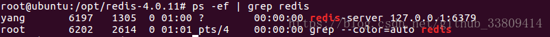
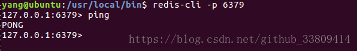
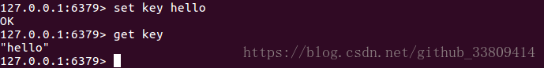
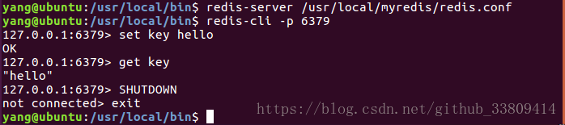
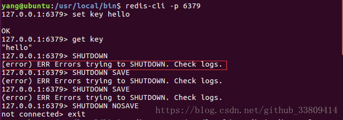

<!DOCTYPE html><html lang="en"><head><meta name="generator" content="Hexo 3.9.0"><meta charset="utf-8"><meta name="keywords" content="个人博客, 松林羊, ysl, songlinsheep, andus, blog, 个人站点, 个人网站"><meta name="description" content="松林羊的个人网站，用于记录，分享。欢迎交流^-^"><meta name="viewport" content="width=device-width,initial-scale=1,maximum-scale=1"><title> Redis(一)-安装+HelloWorld | 松林羊</title><link rel="shortcut icon" href="/smile.ico"><link rel="stylesheet" href="/css/style.css"><link rel="stylesheet" href="/fancybox/jquery.fancybox.min.css"><script src="/js/pace.min.js"></script><script>!function(e,t,o,c,i,a,n){e.DaoVoiceObject=i,e[i]=e[i]||function(){(e[i].q=e[i].q||[]).push(arguments)},e[i].l=1*new Date,a=t.createElement(o),n=t.getElementsByTagName(o)[0],a.async=1,a.src=c,a.charset="utf-8",n.parentNode.insertBefore(a,n)}(window,document,"script",("https:"==document.location.protocol?"https:":"http:")+"//widget.daovoice.io/widget/0f81ff2f.js","daovoice"),daovoice("init",{app_id:"1559132c"}),daovoice("update")</script></head></html><body><main class="content"><section class="outer"><article id="post-Redis-一-安装-HelloWorld" class="article article-type-post" itemscope itemprop="blogPost" data-scroll-reveal><div class="article-inner"><header class="article-header"><h1 class="article-title" itemprop="name"> Redis(一)-安装+HelloWorld</h1></header><div class="article-meta"> <a href="/2019/06/30/Redis-一-安装-HelloWorld/" class="article-date"><time datetime="2019-06-30T09:55:33.000Z" itemprop="datePublished">2019-06-30</time></a><div class="article-category"> <a class="article-category-link" href="/categories/数据库/">数据库</a></div> &emsp;<i class="fe fe-bar-chart"></i> <span class="post-count">788</span>字 &emsp;<i class="fe fe-clock"></i> <span class="post-count">3</span>分钟</div><div class="tocbot"></div><div class="article-entry" itemprop="articleBody"><h3 id="Redis简介"><a href="#Redis简介" class="headerlink" title="Redis简介"></a>Redis简介</h3><ul><li>Redis(Remote Dictionary Server: 远程字典服务器)本质是一个Key-Value类型的分布式<font color="#c7254E">内存数据库</font>。</li><li>整个数据库统统加载在内存当中进行操作，定期通过异步操作把数据库数据flush到硬盘上进行保存。因为是纯内存操作，Redis的性能非常出色，每秒可以处理约8万次写操作，10万次读操作，是已知性能最快的Key-Value DB。</li><li>Redis的出色不仅仅是性能，Redis最大的魅力是支持保存多种数据结构，此外单个value的最大限制是1GB，不像memcached只能保存1MB的数据。Redis提供<strong>String、List、Set、Sorted Set、hashes</strong>等数据结构的存储，可以用来实现很多有用的功能，比如用他的List来做FIFO(First In First Out)双向链表，实现一个轻量级的，高性能的，消息队列服务，用他的Set可以做高性能的tag系统等等。</li><li>另外Redis也可以对存入的Key-Value设置expire时间，因此也可以被当做一个功能加强版的memcached来用。同时，Redis支持<strong>数据的备份</strong>，即master-slave模式的数据备份。并且Redis的所有操作都是<strong>原子性</strong>的。</li><li>Redis的主要缺点是数据库容量受物理内存的限制，不能用作海量数据的高性能读写，因此Redis适合的场景主要局限在较小数据量的高性能操作和运算上。</li></ul><h3 id="下载与安装"><a href="#下载与安装" class="headerlink" title="下载与安装"></a>下载与安装</h3><h4 id="下载：Redis官网"><a href="#下载：Redis官网" class="headerlink" title="下载：Redis官网"></a><strong>下载：</strong><a href="https://redis.io/" target="_blank" rel="noopener">Redis官网</a></h4><p><br><font color="#c7254E">注意：这里下载的是Linux版本</font><br>如果需要下载windows版本可以进入<a href="http://www.redis.cn/" target="_blank" rel="noopener">Redis中文网</a>，但是不建议使用windows版本。</p><h4 id="安装Redis"><a href="#安装Redis" class="headerlink" title="安装Redis"></a><strong>安装Redis</strong></h4><h5 id="环境"><a href="#环境" class="headerlink" title="环境"></a>环境</h5><ul><li>Ubuntu 18.04 LTS</li><li>redis-4.0.11</li></ul><h5 id="安装"><a href="#安装" class="headerlink" title="安装"></a>安装</h5><ul><li>将下载好的redis-4.0.11.tar.gz压缩拷贝到<code>/opt</code>目录(Linux下第三方软件安装目录)下，并使用<code>sudo tar -zxvf redis-4.0.11.tar.gz</code>命令解压，接着进入<code>redis-4.0.11</code>目录</li><li>执行 <code>sudo make</code>命令。( 如果报错，就执行<code>sudo apt-get install gcc</code>安装gcc)</li><li>命令执行完后会出现如下结果。这里可以不执行<code>make test</code>测试，因为可能还需要你安装TCL插件，比较麻烦<br></li><li>最后执行<code>make install</code>完成最后的安装</li></ul><h5 id="常用配置："><a href="#常用配置：" class="headerlink" title="常用配置："></a>常用配置：</h5><ul><li>进入<code>/usr/local</code>目录(Linux应用程序存放目录), 并新建一个目录用户存放redis的配置文件，如我这里叫<code>myredis</code>, 将<code>/opt/redis-4.0.11/redis.conf</code>文件拷贝到<code>myredis</code>目录，这样可以做可以使redis默认的配置文件不受影响</li><li>修改<code>/usr/local/myredis/redis.conf</code>文件<br></li></ul><h3 id="Redis-HelloWorld"><a href="#Redis-HelloWorld" class="headerlink" title="Redis_HelloWorld"></a>Redis_HelloWorld</h3><p>启动redis：进入<code>/usr/local/bin</code>目录，执行<code>redis-server /usr/local/myredis/redis.conf</code><br>查看redis服务是否启动：执行<code>ps -ef | grep redis</code><br><br>可以看到redis服务已经启动，并且端口是默认的6379端口<br>连接到redis数据库：执行<code>redis-cli -p 6379</code><br>测试redis是否连接成功<br><br>如上图即代表连接成功！</p><p>体验redis<br></p><p>关闭redis<br></p><p>遇到的一点小麻烦，关闭redis时提示：<code>(error) ERR Errors trying to SHUTDOWN. Check logs.</code><br></p><blockquote><p>解决方法参考：<a href="https://blog.csdn.net/github_33809414/article/details/82531642" target="_blank" rel="noopener">https://blog.csdn.net/github_33809414/article/details/82531642</a></p></blockquote></div><footer class="article-footer"><ul class="article-tag-list"><li class="article-tag-list-item"><a class="article-tag-list-link" href="/tags/Redis/">Redis</a></li></ul><div style="text-align:center;color:#ccc;font-size:14px;margin-top:10px"> ------------- 本文结束&nbsp;<i class="fe fe-smile"></i>&nbsp;感谢您的阅读 -------------</div></footer></div><nav class="article-nav"> <a href="/2019/07/21/Linux-Ubuntu-18-04-LTS-使用记录/" class="article-nav-link"><strong class="article-nav-caption">前一篇</strong><div class="article-nav-title"> Linux(Ubuntu 18.04 LTS)使用记录</div></a> <a href="/2019/06/30/NoSQL概述/" class="article-nav-link"><strong class="article-nav-caption">后一篇</strong><div class="article-nav-title">NoSQL概述</div></a></nav><div class="comment_headling" style="margin-top:5rem"><font size="5"><i class="fe fe-comments"></i> 评论</font></div><div class="comment"></div><script src="https://cdn1.lncld.net/static/js/3.0.4/av-min.js"></script><script src="/js/Valine.min.js"></script><script type="text/javascript">GUEST_INFO=["nick","mail","link"],guest_info="nick,mail,link".split(",").filter(function(i){return-1<GUEST_INFO.indexOf(i)}),guest_info=0==guest_info.length?GUEST_INFO:guest_info,new Valine({av:AV,el:".comment",app_id:"fq4O7Xaf1cYDbADGellNEn6V-gzGzoHsz",app_key:"a626rNIHkVVk8tGBBCfaQjb9",placeholder:"记得留下你的昵称和邮箱...可以快速收到回复ヾﾉ≧∀≦)o",meta:guest_info,notify:!0,verify:!1,avatar:"monsterid",recordIP:!0,visitor:!1,lang:"zh-cn"})</script></article></section><footer class="footer"><div class="outer"><ul class="list-inline"><li>已分享 48 篇博文，累计 <span class="post-count">55.1k</span> 字</li><ul class="list-inline"><li><i class="fe fe-smile-alt"></i>&nbsp;访客数&emsp;<span id="busuanzi_value_site_uv"></span></li><li><i class="fe fe-bookmark"></i>&nbsp;文章访问量&emsp;<span id="busuanzi_value_page_pv"></span></li></ul></ul><ul class="list-inline"><li><span id="timeDate">载入天数...</span><span id="times">载入时分秒...</span></li><script>var now=new Date;function createtime(){var n=new Date("07/28/2019 10:02:00");now.setTime(now.getTime()+250),days=(now-n)/1e3/60/60/24,dnum=Math.floor(days),hours=(now-n)/1e3/60/60-24*dnum,hnum=Math.floor(hours),1==String(hnum).length&&(hnum="0"+hnum),minutes=(now-n)/1e3/60-1440*dnum-60*hnum,mnum=Math.floor(minutes),1==String(mnum).length&&(mnum="0"+mnum),seconds=(now-n)/1e3-86400*dnum-3600*hnum-60*mnum,snum=Math.round(seconds),1==String(snum).length&&(snum="0"+snum),document.getElementById("timeDate").innerHTML="已等候你 "+dnum+" 天 ",document.getElementById("times").innerHTML=hnum+" 小时 "+mnum+" 分 "+snum+" 秒"}setInterval("createtime()",250)</script><ul class="list-inline"><li>&copy; 2019-2020 松林羊</li><li>Theme <a href="https://github.com/zhwangart/hexo-theme-ocean">Ocean</a></li></ul></ul></div></footer></main><aside class="sidebar sidebar-specter"> <button class="navbar-toggle"></button><nav class="navbar"><div class="logo"> <a href="/"></a></div><ul class="nav nav-main"><li class="nav-item"> <a class="nav-item-link" href="/" target="_self">主页</a></li><li class="nav-item"> <a class="nav-item-link" href="/archives" target="_self">归档</a></li><li class="nav-item"> <a class="nav-item-link" href="/categories" target="_self">分类</a></li><li class="nav-item"> <a class="nav-item-link" href="/tags" target="_self">标签</a></li><li class="nav-item"> <a class="nav-item-link" href="/links" target="_self">友链</a></li><li class="nav-item"> <a class="nav-item-link">综合</a><ul class="nav nav-main nav2"><li class="nav-item li2"> <a class="nav-item-link-child" href="/resource" target="_self">资 源</a></li><li class="nav-item li2"> <a class="nav-item-link-child" href="/site" target="_self">网 站</a></li></ul></li><li class="nav-item"> <a class="nav-item-link">关于</a><ul class="nav nav-main nav2"><li class="nav-item li2"> <a class="nav-item-link-child" href="/me" target="_self">博 主</a></li><li class="nav-item li2"> <a class="nav-item-link-child" href="http://stars.andus.top/" target="_blank">记 录</a></li><li class="nav-item li2"> <a class="nav-item-link-child" href="/plan" target="_self">计 划</a></li></ul></li><li class="nav-item"> <a class="nav-item-link" href="http://resume.andus.top/" target="_blank">简 历</a></li><li class="nav-item"><a class="nav-item-link nav-item-search" title="搜索"><i class="fe fe-search"></i> 搜索</a></li></ul></nav><nav class="navbar navbar-bottom"><ul class="nav"><li class="nav-item"><div class="totop" id="totop"><i class="fe fe-rocket"></i></div></li><li class="nav-item"></li></ul></nav><div class="search-form-wrap"><div class="local-search local-search-plugin"> <input type="search" id="local-search-input" class="local-search-input" placeholder="Search..."><div id="local-search-result" class="local-search-result"></div></div></div></aside><script src="/js/jquery-2.0.3.min.js"></script><script src="/js/jquery.justifiedGallery.min.js"></script><script src="/js/lazyload.min.js"></script><script src="/js/busuanzi-2.3.pure.min.js"></script><script src="/fancybox/jquery.fancybox.min.js"></script><script src="/js/tocbot.min.js"></script><script>900<=document.body.clientWidth&&tocbot.init({tocSelector:".tocbot",contentSelector:".article-entry",headingSelector:"h1, h2, h3, h4, h5, h6",hasInnerContainers:!0,scrollSmooth:!0,positionFixedSelector:".tocbot",positionFixedClass:"is-position-fixed",fixedSidebarOffset:"auto"})</script><script src="/js/ocean.js"></script><script src="/js/andus.js"></script><script src="/js/love.js"></script><script>$("img:not(#andus-head-img)").each(function(){$(this).wrap('<a class="fancybox" data-fancybox="gallery" href="'+$(this).prop("src")+'"></a>')})</script><script src="/live2dw/lib/L2Dwidget.min.js?094cbace49a39548bed64abff5988b05"></script><script>L2Dwidget.init({model:{scale:1,hHeadPos:.5,vHeadPos:.618,jsonPath:"/live2dw/assets/haruto.model.json"},display:{superSample:2,width:150,height:300,position:"left",hOffset:0,vOffset:-20},mobile:{show:!1},react:{opacityDefault:.5,opacityOnHover:.2},log:!1,pluginJsPath:"lib/",pluginModelPath:"assets/",pluginRootPath:"live2dw/",tagMode:!1})</script></body>